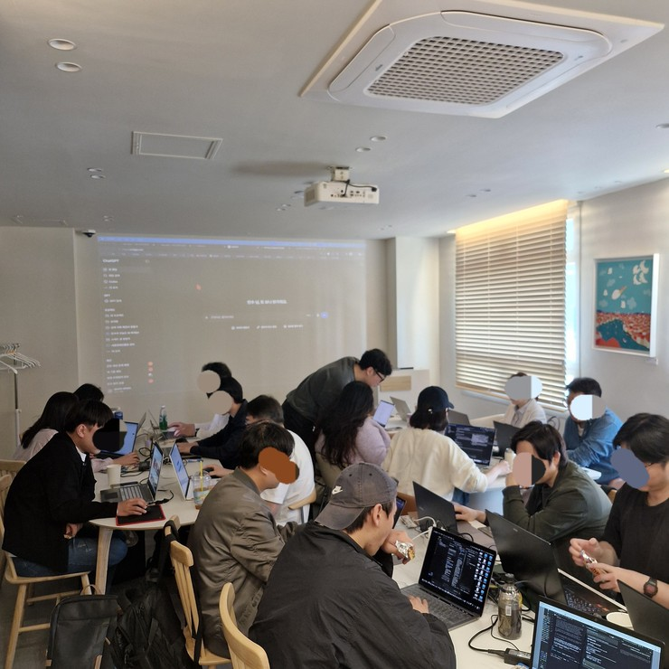

← 학교 소개로 돌아가기
[AIxSCHOOL] AI 학교 입학 신청하기
12개월 정규과정 | 6팀 24직군 | 나민수 대표 직강
1기모집중정원 30명
가르치기 전에, 우리 회사가 먼저 씁니다
주문 안내 3,694건쇼핑몰 CS 담당 · 2026.07.31~09.17
주문이 들어오면 안내 문자와 메일을 내보내는 일을 AI 직원이 처리한 건수입니다.
업무 카드 441건운영 매니저·비서 · 298건 완료
카톡·텔레그램·회의에서 할 일을 뽑아 담당자 5명에게 배정한 건수입니다.
AI 직원 24직군6개 자동화팀
영상·글쓰기·SNS·디자인·고객주문·업무관리 여섯 팀을 실제 운영에 붙여 쓰고 있습니다.
사람을 더 뽑아서 해결하려 했습니다.
그런데 매달 나가는 건
사람값이 아니라 시간이었습니다.
할 일은 늘고, 뽑자니 고정비가 무섭고,
혼자 하자니 밤이 사라집니다.
여섯 개의 자동화팀.
맡길 일을 고르세요.
1학기에는 직원 한 명씩. 2학기에는 하나의 팀으로.
영상 콘텐츠 자동화팀

콘텐츠 기획자잘된 영상·광고를 모아 왜 잘됐는지 정리해요

영상편집자촬영본에서 군더더기를 자르고 자막을 달아요

숏폼 영상편집자긴 글·영상을 세로 짧은 영상으로 만들어요

유튜브 채널 관리자정해둔 댓글에 답글을 달아요
글쓰기 자동화팀

콘텐츠 에디터오늘 쓸 만한 소식을 모아 글감으로 정리해요

블로그 마케터상품 글을 쓰고 블로그에 올려요

카페 바이럴 마케터준비한 글을 시간 맞춰 카페에 올려요

출판 편집자모아둔 자료를 전자책 원고로 묶어요
SNS 자동화팀

SNS 마케터스레드에 글을 올리고 댓글에 답해요

릴스 PD영상에 자막·음성을 붙여 릴스로 올려요

네이버 카페 관리자새로 가입한 회원에게 환영 댓글을 달아요

카카오톡 오픈채팅방 관리자오픈채팅방에 공지·홍보를 제시간에 올려요
디자인 자동화팀

그래픽 디자이너브랜드 이름으로 로고 시안을 만들어요

SNS 콘텐츠 디자이너글을 카드뉴스 이미지로 만들어요

PPT 디자이너내용을 발표 자료로 정리해요

상세페이지 디자이너원고와 사진으로 판매 페이지를 만들어요
고객·주문 자동화팀

쇼핑몰 CS 담당자주문이 들어오면 상품별 안내를 보내요

쇼핑몰 운영 관리자주문·매출을 모아 매일 보고해요

퍼포먼스 마케터어느 링크에서 팔렸는지 기록해요

출고·배송 관리 담당자배송 준비 주문을 배송 완료로 처리해요
업무관리 자동화팀

비서회의·대화에서 할 일을 뽑아 정리해요

운영 매니저담당자에게 할 일을 알리고 완료를 챙겨요

시스템 모니터링 요원다른 AI 직원이 멈췄는지 지켜봐요

IT 운영 담당자멈춘 AI 직원을 다시 일하게 만들어요
직원 사진은 AI로 만든 이미지입니다.
설명 대신,
일하는 화면을 보여드립니다.
아래는 메이크패밀리가 사내에서 돌린 실제 운영 기록입니다.
24
쇼핑몰 CS 담당자
3,694건
주문 안내 메일·문자 발송
2026.07.31~09.17
운영 매니저·비서
441건
업무 카드 배정 · 298건 완료
담당자 5명에게 배정
스레드 운영
1,681건
유입에서 발생한 결제
방문 34,671 · 31,688,900원
메이크패밀리 내부 운영 기록입니다. 수강생의 동일한 결과를 보장하지 않습니다.
말보다 먼저,
일한 화면입니다.
AI 직원이 돌아간 뒤 남은 운영 대시보드 기록입니다.
메이크패밀리 내부 운영 화면입니다. 수강생의 동일한 결과를 보장하지 않습니다.

AI 빌드데이 — 6개월·12개월 차에 직접 만든 직원을 발표합니다.
교육받은 분들은
자기 사업에서 이런 결과를 냈습니다.
화장품 브랜드
3.89천만원
실제 결제금액
Threads 프로필 조회 931,840
건강용품 브랜드
116건
최근 1주일 배송준비
조회 1,116,985
건강식품 브랜드
첫 매출
발생 확인
조회 736,878
학교 개설 전 기존 교육 프로그램 참여자 사례이며 운영진 성과와는 별개입니다.
수강 전·후 비교 자료가 없어 확인된 결과만 표시합니다. 같은 결과를 보장하지 않습니다.
결과 화면도
그대로 싣습니다.
수강생이 제공한 실제 운영 결과 화면입니다.
학교 개설 전 기존 교육 프로그램 참여자의 결과입니다.
수강 전·후 비교 자료가 없어 확인된 결과만 표시했으며 같은 결과를 보장하지 않습니다.

나민수 대표가 직접 가르칩니다.
졸업할 때 남는 것은
내 업무에서 돌아가는 AI 팀입니다.
매월 직원 1명씩 · 6개월 1차 졸업 · 12개월 최종 졸업
CURRICULUM
12개월 동안
이렇게 갑니다.
매월 AI 직원을 한 명씩 만들어 실제 업무에 붙입니다.
6개월 차에 1차 졸업, 12개월 차에 조직도를 발표하고 최종 졸업합니다.
입학 주간 · 시작하기강의실·질문 방법을 알고, 내 컴퓨터에서 첫 실습 자료가 열린다
6강
01교장 인사 · 이 학교에서 1년 동안 하는 일
강의02강의실 쓰는 법 · 영상→교재→따라하기→제출
강의1개월 · 직원 찾아줘 · 비서 만들기우리 회사에서 AI 직원에게 맡길 일 3개를 정하고, 회사 자료를 아는 비서를 만든다
6강
01직원 찾아줘 1 · 내 하루 업무 적기
강의02직원 찾아줘 2 · AI 직원에게 맡길 일 고르기
강의03비서 만들기 1 · 회사 자료 창고 만들기
강의04비서 만들기 2 · 자료 넣고 목차 만들기
강의05비서 만들기 3 · 비서에게 회사 규칙 알려주기
강의06비서 만들기 4 · 비서에게 첫 일 맡기기
강의2개월 · AI 직원 만들기 · 첫 직원직원 목록에서 1명을 골라 우리 회사 자료로 한 번 일을 시켜 본다
5강
01AI 직원 만들기 1 · AI에게 일 시키는 법
강의02AI 직원 만들기 2 · 처음 돌려보고 되돌리기
강의03AI 직원 만들기 3 · 결과 확인하고 다른 일에 쓰기
강의04첫 직원 고르기 · 어느 팀부터 시작할까
강의3개월 · 매일 알아서 일하게만든 직원이 사람이 안 눌러도 정해진 시간에 일한다
4강
01정해진 시간에 자동으로 돌게 하기 · Mac
강의02정해진 시간에 자동으로 돌게 하기 · Windows
강의03멈췄을 때 알림 받기 · 컴퓨터가 꺼져 있으면?
강의4개월 · AI 직원 교육하기틀린 결과를 규칙으로 고치고, 고객에게 나가기 전 내가 확인한다
4강
02고객에게 나가기 전에 내가 확인하는 단계 넣기
강의5개월 · 직원끼리 이어서 일하기한 직원의 결과를 다음 직원이 이어받고, 사장님은 아침 보고만 본다
3강
6개월 · 1차 졸업AI 직원 1명 이상을 직접 만들어 실제 업무에 쓰고 있는지 확인받고 수료증을 받는다
2강
011차 졸업 준비 · 내 직원이 실제로 일한 화면 모으기
강의7개월 · 두 번째 팀 고르기매출·고객 쪽 직원을 고르고 첫 직원을 만든다
2강
01두 번째 팀 고르기 · 매출과 고객 쪽
강의8개월 · 두 번째 팀 · 연결두 번째 팀 직원을 첫 팀 직원과 잇는다
1강
9개월 · 어디서 팔렸는지 보기어느 채널에서 고객이 왔는지 숫자로 본다
1강
10개월 · 주문·배송까지주문 처리까지 직원에게 맡긴다
1강
11개월 · 자리를 비워도 돌아가게사장님이 1주일 자리를 비워도 직원들이 돌아간다
2강
01사장님이 1주일 자리를 비워도 돌아가게 · 조직도 만들기
강의12개월 · 최종 졸업 · 파트너스조직도를 발표하고 최종 졸업한다
3강
01최종 졸업 발표 준비 · 조직도와 숫자로 말하기
강의INSTRUCTOR
AI 학교,
나민수 대표가 직접 가르칩니다.

나민수
AIxSCHOOL 교장 · 메이크패밀리 대표
- 사내 운영에 AI 직원을 직접 붙여 쇼핑몰 CS·업무 분배를 돌리고 있습니다
- 우리 회사가 쓰는 AI 직원을 그대로 만드는 법을 가르칩니다
- 매월 만든 직원을 과제로 제출하고 검토·수정·승인을 거칩니다
- 졸업은 영상 시청이 아니라 실제로 일하는 화면으로 판정합니다
월 분할 시275,000원
일시납3,300,000원
12개월 할부 기준 월 275,000원입니다. 할부 수수료와 조건은 결제 수단에 따라 다릅니다.
입학 신청하기
입학설명회에서 어떤 AI 직원이 필요한지 먼저 확인하실 수 있습니다.
신청 전에 확인해 주세요
- 운영 수치는 메이크패밀리 내부 기록이며 수강생의 동일한 결과를 보장하지 않습니다.
- 수강생 사례는 학교 개설 전 기존 교육 참여자의 결과이며 운영진 성과와 별개입니다.
- 수강 전·후 비교 자료가 제공되지 않아 확인된 결과만 표시했습니다.
- 졸업은 영상 시청만으로 인정되지 않습니다. 실제로 일하는 직원 화면 확인이 필요합니다.
- AI 직원 인물 이미지는 AI로 만든 것이며 실제 인물이 아닙니다.
12개월 정규과정 · 정원 30명3,300,000원
입학 신청